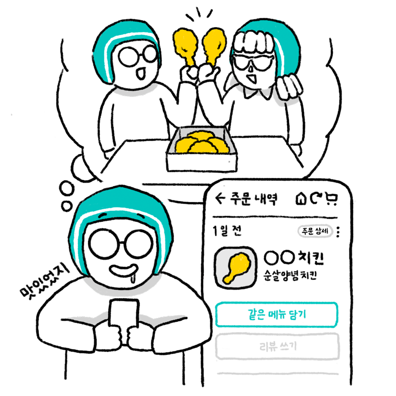
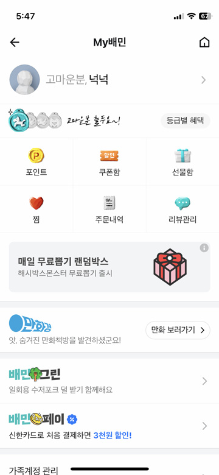
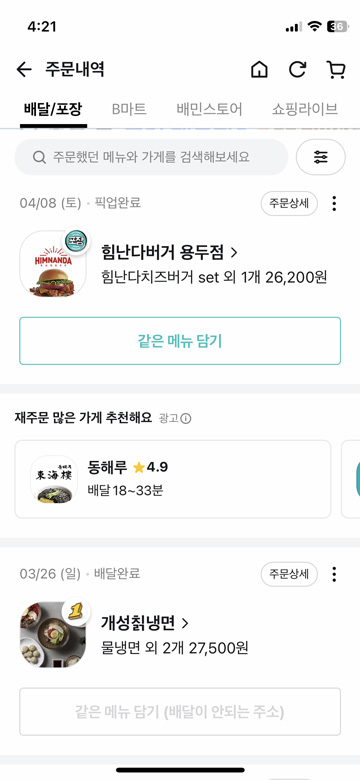

예전에 먹은 음식을 또 주문하고 싶어!
주문 내역을 보면 예전에 시켰던 곳을 확인할 수 있습니다. 언제 어떤 가게에서 어떤 음식을 시켰는지 볼 수 있습니다. 주문 내역을 보고 똑같은 메뉴를 시킬 수도 있고, 가게나 음식의 리뷰를 쓸 수도 있습니다. 예전에 먹었던 음식이 맛있어서 또 주문하고 싶을 때 주문했던 가게의 정보, 음식 가격을 알고 싶을 때 주문했던 음식의 리뷰를 쓰고 싶을 때
주문 내역
이럴 때 사용해봐요!
주문내역 이렇게 사용해보세요!

1
배달의민족 첫 화면에서‘My배민’을 누른다.

2
'주문내역'을 누른다.

3
예전에 시켰던 가게와 메뉴 이름이 나온다. 가게 이름을 누르면 가게 정보를 볼 수 있다.